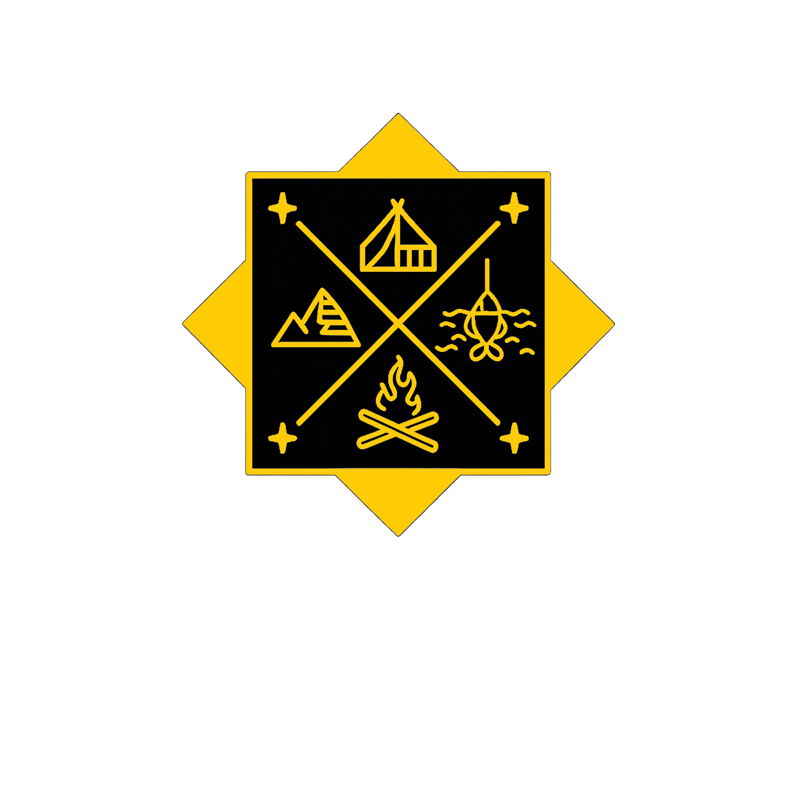

Fishing tackle, live auctions, great deals and products made for anglers who would rather be on the water.
OUR PRODUCTS WATCH US LIVEGone Outdoors tackle built with performance, reliability and real-world fishing in mind.
Screw lock weighted hooks designed for secure rigging and dependable hooksets.
Flash, vibration and a compact presentation built for chasing predatory fish.
Hard-thumping action paired with premium components for covering water effectively.
Join Gone Outdoors for live fishing tackle auctions, new products, great deals and good vibes.
WHATNOT TIKTOK LIVEGone Outdoors is a Florida-based fishing tackle company built around our love for fishing, quality gear and the fishing community. We sell name-brand tackle alongside our growing line of Gone Outdoors products and connect with anglers through live shows and auctions.
Follow Gone Outdoors
Follow along for live shows, new products, fishing content and upcoming releases.
INSTAGRAM TIKTOK EBAY